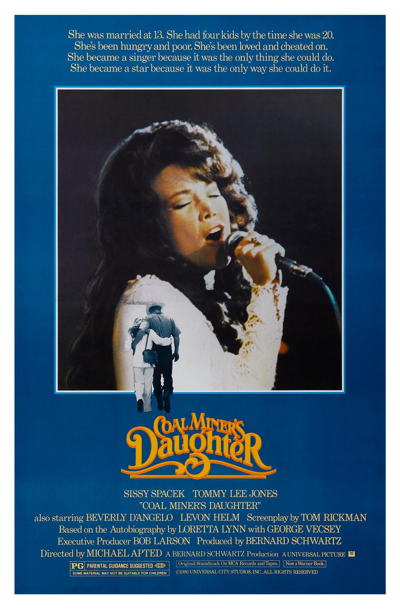

Coal Miner's Daughter
53rd Academy Awards
(Oscars 1981)
7 Nominations, 1 Award
| Watched |
| Nominations | ||
|---|---|---|
| Category | Nominees | Result |
| Best Picture | Bernard Schwartz | Nominated |
| Actress in a Leading Role | Sissy Spacek | Won |
| Writing (Screenplay Based on Material from Another Medium) | Tom Rickman | Nominated |
| Cinematography | Ralf D. Bode | Nominated |
| Film Editing | Arthur Schmidt | Nominated |
| Art Direction | John M. Dwyer and John W. Corso | Nominated |
| Sound | Jim Alexander, Richard Portman, and Roger Heman | Nominated |